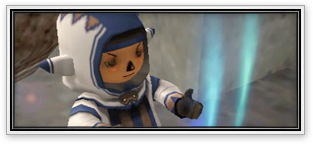
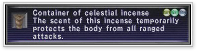
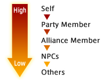

[Event-Related]
 A sixth Gobbiebag quest has
been added. Please note that the previous Gobbiebag quest must be completed before
the new one will trigger. A sixth Gobbiebag quest has
been added. Please note that the previous Gobbiebag quest must be completed before
the new one will trigger.
Supply quests and regional
teleportation to the Tavnazian Archipelago are now available.
Shortcuts into Promyvion –
Vahzl for those who have partially or fully completed the Promathia mission have
been added.
The longer a player remains
in the same area, the more difficult it will become to obtain certain items through
logging and mining.
A mage from Windurst's Orastery
has been dispatched to Jeuno.

Several new quests and events
have been added to the Promathia areas.
The Bastok quest "All By Myself"
can now be played regardless of whether or not one has the Chains of Promathia
expansion pack installed.
The level restriction for the
Tavnazia quest "The Big One" has been raised from 40 to 45.
The Old Sabertooth that plays
a part in the quest "The Fanged One" will now only appear after a player has targeted
the set of tiger bones in the Sauromugue Champaign.
In addition, the Old Sabertooth will no longer drop any items.
Only players who have accepted
the quest "Hook, Line, and Sinker" will be able to fish the monster in Qufim that
drops the Egret fishing rod.
A new reward for completing
the quest "Tuning Out" has been added.
The contents of the treasure
coffers in Castle Oztroja have been changed. Accordingly, certain items will now
be obtainable through different methods.
Weather coverage has now expanded
to Chains of Promathia areas.
Players can now only target
the Brass Statue in Castle Oztroja for a limited amount of time.
Monsters can now be caught
while fishing in all areas of Qufim and the Buburimu Peninsula.
Several events previously unavailable
for replay through town bards, etc. have been added to the replay list.
Ballista
The following changes have been made to Ballista.
The following match types are area-specific:
All or Nothing (one match) * Normal Items Restricted: Jugner Forest
Best of Three (three matches) * Normal Items Restricted: Pashhow Marshlands
Best of Three (three matches) * Normal Items Allowed: Meriphataud Mountains
However, please note that items such as arrows, bullets, and projectiles are allowed
in all areas.
A new "temporary item" system has been added.
Items that are dug up using the /quarry command can now be stored in one's inventory
for the duration of the current Ballista match (set of matches). These items can
be used at any time, but will be collected by the presiding Herald at the conclusion
of the match.

Only one type of each temporary item can be held at a time. If a player happens
to dig up an item he/she already possesses, it must be used immediately or thrown
away.
A new point system for rating Ballista participants on their performance has been
introduced.
Players will earn and lose "Ballista Points" for their various actions on the
battlefield. These points can then be traded for vouchers that are automatically
exchanged for temporary items during future matches.
Players will now build up a resistance to bards' lullabies after having the spell
repeatedly cast on them.
[Battle-Related]
The following orb battles have been added:
| Orb |
Trade Item |
Battlefield |
Battle Name |
Restrictions |
| Comet orb |
50 beastmen's seals |
Horlais Peak |
Eye of the Tiger |
Level 50
15 minutes
3 members |
| Waughroon Shrine |
The Final Bout |
Level 50
3 minutes
3 members |
| Balga's Dais |
Rapid Raptors |
Level 50
15 minutes
3 members |
| Qu'Bia Arena |
An Awful Autopsy |
Level 50
15 minutes
3 members |
| Moon orb |
60 beastmen's seals |
Horlais Peak |
Shots in the Dark |
Level 60
15 minutes
3 members |
| Waughroon Shrine |
Up in Arms |
Level 60
15 minutes
3 members |
| Balga's Dais |
Wild Wild Whiskers |
Level 60
15 minutes
3 members |
| Qu'Bia Arena |
Celery |
Level 60
15 minutes
3 members |
| Atropos orb |
30 Kindred's seals |
Horlais Peak |
Contaminated Colosseum |
No Level Restriction
30 minutes
6 members |
| Waughroon Shrine |
Prehistoric Pigeons |
No Level Restriction
30 minutes
6 members |
| Balga's Dais |
Moa Constrictors |
No Level Restriction
30 minutes
6 members |
| Lachesis orb |
30 Kindred's seals |
Horlais Peak |
Today's Horoscope |
No Level Restriction
30 minutes
6 members |
| Waughroon Shrine |
Operation Desert Swarm |
No Level Restriction
30 minutes
6 members |
| Balga's Dais |
Royale Ramble |
No Level Restriction
30 minutes
6 members |
| Clotho orb |
30 Kindred's seals |
Horlais Peak |
Double Dragonian |
No Level Restriction
30 minutes
6 members |
| Waughroon Shrine |
Copycat |
No Level Restriction
30 minutes
6 members |
| Balga's Dais |
Seasons Greetings |
No Level Restriction
30 minutes
6 members |
*Several gameplay issues have been discovered in the following
three orb battles:
The Final Bout / Today's Horoscope / Moa Constrictors
Implementation of the battles will be delayed until the issues have been addressed.
Please check upcoming news for further details.
If all party members' HP remain
at zero for a set amount of time, the party will be removed from the battlefield.
The conditions for certain
notorious monsters to appear, as well as the drop rates for the items they carry,
have been adjusted.
Several new notorious monsters
have been added to the Chains of Promathia areas.
The following adjustments have
been made in Promyvion – Holla, Promyvion – Mea, Promyvion – Dem, and Promyvion
– Vahzl:
Monster placement changes
Monster movement pattern changes
Monster level adjustments
Monster item drop changes
Memory stream appearance rates
An issue allowing the removal
of the "HP Max Down" and "MP Max Down" effects with holy water
or the spell Cursna has been addressed.
A new thief job trait that
increases the agility bonus of the ability "Trick Attack" has been added.
This trait is called "Assassin."
The effects of select high-
and low-level etudes have been adjusted.
High-level etudes will now raise a player's attributes considerably more than
before. However, the enhancement will gradually wear off with time.
The dragoon job ability "Spirit
Link" will now not only heal a pet wyvern's wounds, but also cure it of detrimental
status effects such as poison.
A pet wyvern's breath attacks
can now be used to produce magic bursts. However, only an accuracy bonus will
be rewarded if the MB is successful.
An accuracy bonus is now rewarded
when using "Blood Pact" attacks during magic bursts.
The strength of physical "Blood
Pact" attacks will not increase as much when fighting enemies considerably
weaker than the summoner. The damage ratio when fighting stronger enemies has
not been adjusted.
The variety of items that can
be dug up using the "Scavenge" ability has been increased.
The Goblin Archaeologists that
are found in the Konschtat Highlands, Tahrongi Canyon, and on the La Theine Plateau
can now see through the thief ability "Hide."
The additional Stun effect
of certain weapons will no longer activate in succession.
However, it is still possible to repeatedly inflict the effect on a monster through
magic spells and weapon skills.
[Item-Related]
The transaction fee for items
put up on auction is now based on the seller's asking price. The formulas for
calculating the transaction fee are listed below.
Jeuno auction houses:
Single item fee = 2% of the seller's asking price +100 gil.
Stacked item fee = 1% of the seller's asking price +400 gil.
Other auction houses:
Single item fee = 1% of the seller's asking price +1 gil.
Stacked item fee = 0.5% of the seller's asking price +4 gil.
In accordance with these adjustments, new messages will be displayed when putting
items up on auction. Be sure to confirm these messages before completing a transaction.
The duration and effect of
several foods have been adjusted.
Effects
Limits have been introduced to certain statuses that are affected by consuming
meals and drinks. Those statuses are as follows:
attack/ranged attack/defense/accuracy/ranged accuracy/HP/MP
These limits vary with the type of food, as well as the consumer's job and level.
We suggest trying many different combinations to see which foods are most effective
in different situations.
Effect Types
The effects of most of the foods in FINAL FANTASY XI have been adjusted and categorized
by type.
Please note that this categorization will not affect the listing of foods on auction.
Meat dishes
Mainly improve attributes such as STR, attack, and ranged attack.
Example: Grilled hare
Sushi
Mainly improve attributes such as DEX and accuracy.
There are also some types of sushi that improve ranged accuracy.
Example: Carp sushi
Fish dishes
Mainly improve DEX.
There are also some dishes that improve accuracy and ranged accuracy.
Example: Salmon sub
Seafood dishes (other than fish)
Mainly improve defense.
Example: Boiled crab
Cereals
Mainly raise maximum HP.
(The effects of most cereals did not require adjusting.)
Example: Roasted corn
Vegetable dishes
Mainly raise AGI and ranged accuracy.
Example: Pea soup
Mushroom dishes
Mainly raise MND, maximum MP, and lower enmity.
Example: Roast mushrooms
Pies
Mainly raise INT and maximum MP.
(The effects of most pies did not require adjusting.)
Example: Apple pie
Snack foods
Mainly raise amount of HP and MP healed when resting.
The effect duration of snack foods has been reduced to three minutes; however,
synthesis production quantities, as well as maximum stack quantities, have been
increased.
Example: Garlic cracker
Sweets (other than pies and snack foods)
Mainly raise maximum MP.
Example: Snoll gelato
Drinks
Mainly refresh MP.
(The effects of most drinks did not require adjusting.)
Example: Pineapple juice
Others
There are foods that do not fall into any of the above categories. These items
have effects that may differ from those items listed here.
Duration of Effect
The duration of most food effects have been adjusted based on the dish's new categorization.
3 minutes:
Snack foods (crackers, etc.)
5 minutes:
High-quality snack foods, raw meat, fish, fruit, and vegetables
30 minutes:
Stackable (12) dishes
1 hour:
Stackable (12) high-quality dishes
3 hours:
Unstackable dishes (not including drinks)
4 hours:
Unstackable high-quality dishes
The "enhances effect of
rice balls" attribute found on certain equipment has been enhanced.
The graphics of select throwing
weapons have been altered.
The
icon graphics for the following items have been changed:
Uchitake/Tsurara/Kawahori-Ogi/Makibishi/Hiraishin/Mizu-Deppo/Shihei/
Jusatsu/Kaginawa/Sairui-Ran/Kodoku/Shinobi-Tabi/Mighty Bow
The stack number for several
select items has been increased.
In accordance with these adjustments, the buying and selling prices of the aforementioned
items have also been changed.
| Item |
Before |
|
After |
| Rolanberry Pie |
1 |
>> |
12 |
| Rolanberry Pie +1 |
1 |
>> |
12 |
| Pamama Tart |
1 |
>> |
12 |
| Opo-opo Tart |
1 |
>> |
12 |
| Ginger Cookie |
12 |
>> |
99 |
| Coin Cookie |
12 |
>> |
99 |
| Wild Cookie |
12 |
>> |
99 |
| Acorn Cookie |
12 |
>> |
99 |
| Spicy Cracker |
12 |
>> |
99 |
| Red Hot Cracker |
12 |
>> |
99 |
| Garlic Cracker |
12 |
>> |
99 |
| Garlic Cracker +1 |
12 |
>> |
99 |
| Goblin Chocolate |
12 |
>> |
99 |
| Hobgoblin Chocolate |
12 |
>> |
99 |
| Bretzel |
12 |
>> |
99 |
| Cinna-cookie |
12 |
>> |
99 |
| Wizard Cookie |
12 |
>> |
99 |
| Salmon Rice Ball |
1 |
>> |
12 |
| Naval Rice Ball |
1 |
>> |
12 |
| Broiled Pipira |
1 |
>> |
12 |
| Broiled Carp |
1 |
>> |
12 |
| Broiled Trout |
1 |
>> |
12 |
| Broiled Eel |
1 |
>> |
12 |
| Party Egg |
1 |
>> |
12 |
Players can now receive their
reward immediately after trading anima to Harith in the quest "Empty Memories."
The effect duration of the
item "yellow liquid" when used in the Chains of Promathia mission (chapter
2) has been increased.
Hippogryph tail feathers can
now be traded.
Players can now possess more
than one "mistmelt."
The number of items required
to obtain a mistmelt in the quest "Fly High" has been reduced.
The number of items required
to obtain a pinch of Shu'Meyo salt in the quest "Bombs Away" has been
reduced.
The equip slot for the following
items has been changed from "Waist" to "Back":
Ether Tank/Water Tank/Potion Tank
The buying price for the following
items has been adjusted:
Black Sole/Silver Shark/Bastore Bream
[System-Related]
By pressing the Enter key on
the keyboard or the confirm button on the controller while viewing the "Price
History" of an item on auction, a player can display the date and time of
sale, the unabbreviated buyer and seller names, and the sale price in the log
window.
The order of messages that
appear when using the /nominate, /vote, and /propose commands has been adjusted.
The chat filter has been expanded
to include NPCs.
NPC Filter
Previously, all PCs and NPCs (monsters included) not in a player's party or alliance
were treated as "others." However, with the addition of the NPC category
in the chat filter, players can now toggle on and off the display of text relating
to the actions of other PCs, without filtering NPC actions (and
vice versa).
Pet Filter
Messages regarding the actions of a player's pet are now categorized with the
actions of his/her master. To filter the pet messages from a party member, a player
would have to use the party filter options. However, to filter the pet messages
of a non-party/alliance member PC, the player must use the NPC filters. This type
of usage may be changed in a future patch.
Filter Accuracy
The accuracy of the existing chat filters has been improved. This has been achieved
by assigning priority levels to different types of PCs and NPCs.

For example, previously, when a member of a player's party cast a spell on another
member of the party, the "Effects of special actions on party" filter
would not cover up the spell message; it could be filtered using "Effects
of special actions on others." However, now that character priority levels
have been introduced, this anomaly no longer occurs.
Also, HP recovery messages are now covered by the "Effects of special actions"
filters. |